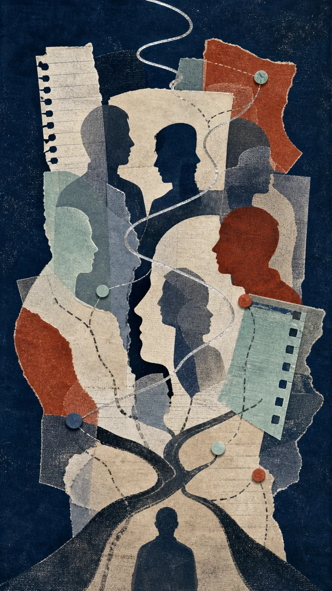

MOVEMENT I
STREAM
STREAM
A stream-of-consciousness archive does not reveal one hidden narrator. It reveals positions: voices that interrupt, answer, build, joke, read, and disappear into action.

Generated illustrationSelect a position. The center changes, but the others remain in view. Without JavaScript, all six positions are fully described in the essay below.
Makes the instruction dense enough that the next move becomes unavoidable.
Dialogical-self theory describes a multiplicity of positions able to interact. [4] checked
“Voice” here is conceptual language: a way to represent how one person can answer from different social, temporal, and embodied positions.
The source archive repeatedly shifts among builder, reader, satirist, athlete, taste, and reflective registers. [1] reported
This classification is editorial. It is useful only while it keeps the archive more alive than the label.
Tate notes the unsettling or humorous power of unexpected combinations in collage. [6] checked
A stream archive needs this grammar. One fragment need not dissolve into another. Meaning can happen at the join.
The Inner Game names a judging “teller” and an intuitive “doer” as Self 1 and Self 2. [2] reported
It is a practical metaphor for interference in action. It is not the same framework as James's stream or the dialogical self.
The most honest portrait is not one final narrator. It is a set of positions whose adjacency creates meaning. [S] synthesis
Who is speaking when I say “I”? A stream of consciousness sounds singular only after it has passed. While it is happening, it changes its posture. The builder gives instructions. The reader notices an image. The satirist cuts the sentence short. The athlete disappears into the act. The reflective voice circles a thought until it becomes usable.
William James began with something simpler than a theory of identity: thinking of some sort goes on. He called thought changing, continuous, and selective. A century later, dialogical-self theory offered a different picture: a person may occupy several positions, each able to answer the others. This is not a claim that tiny agents live inside the mind.
Collage gives the right artistic grammar. It does not melt its pieces into one smooth substance. Meaning comes from adjacency. The join is not damage to hide. It is where the work begins. So the question changes. Not: which voice is the real one? Instead: which voice has the floor, what can it see from there, and which other voice should answer?
Exact evidence spans and source tiers. Personal material is a public-safe excerpt; the private archive is not published.